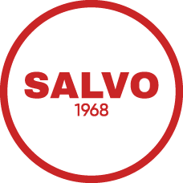

An at-a-glance view of the system being built with Lionstar Social. Each component shows its current status.
The first proper Campaign Brief project, built around the House of Pasta launch — a separate division with its own landing page, brand identity and social handle. Tasting 13 July, launch end September. We build the brief from Rosa's strategy once it's ready. Sets the template for how future campaigns get briefed.
Reverse-engineered from Rosa's signed-off Rummo brief. The project is being set up now, with the August Sammontana brief as the first live test. Operational frame that keeps every channel aligned to the month's priorities.
Adding prompts for buyer lens, product role and commercial objective so every brief threads Jay's commercial framing through to the content.
Updated buyer personas: 4 personas (3 existing + new Italian Deli / Cafe), real customer examples, customer voice from reviews, buyer lens overlay and commercial focus per persona. Plus a set of visual reference cards for the team. With Rosa and Jay for sign-off, then folded into the system knowledge hub.
LinkedIn and WhatsApp skills built once the brief structure is stable, so they ladder up to the new framework cleanly. Email skill waits until Salvo is on HubSpot (not before).
Quarterly Campaign Brief project, Strategy / Brainstorming project for Rosa, Design Brief workflow for Manuela, marketing SOPs, performance feedback loop.
HubSpot integration scoping, basic reporting dashboard, governance document, trends briefings, 2027 roadmap proposal.